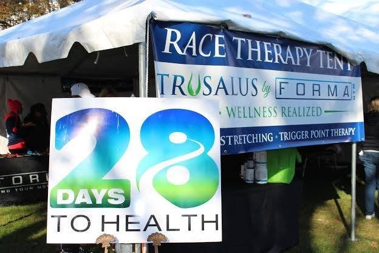
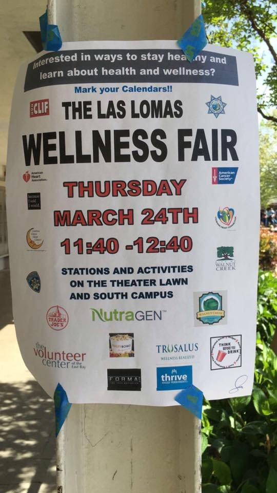
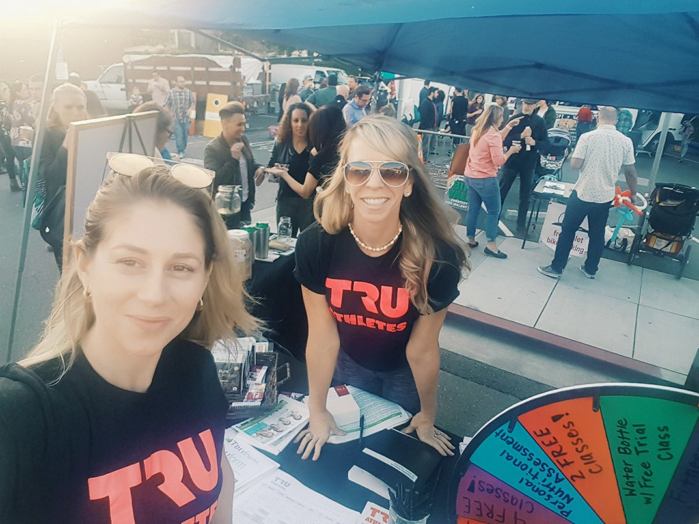
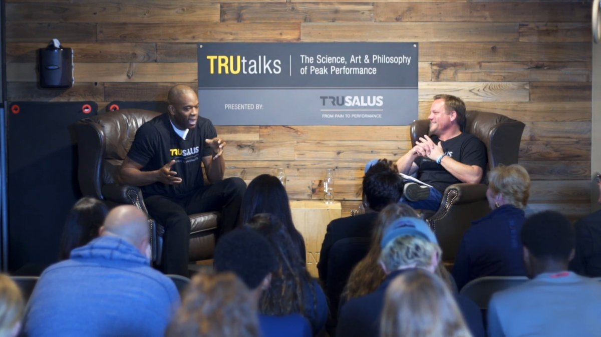
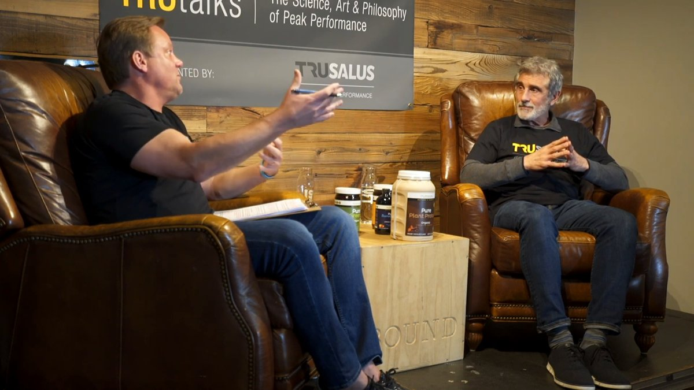
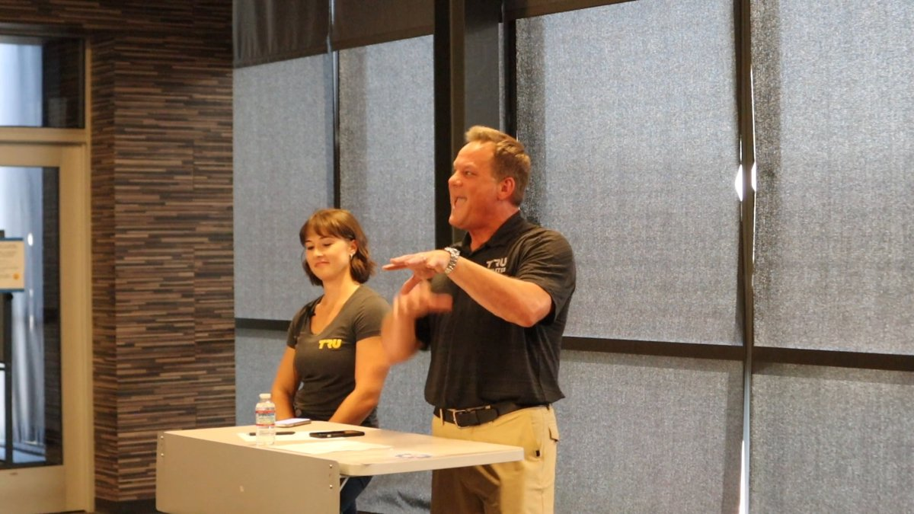

Coach, swim-club president, sponsor and volunteer in Walnut Creek, Danville and the water polo community since 1998.
In the community






Leadership Roles
- Vice President, Walnut Heights Swim Club, Walnut Creek, CA, 2007-08; Vice President 2005 to 2007 and President 2007 to 2009 of the Walnut Heights Otters swim team board
- Founder and President, Young Entrepreneurial Society of Marin County, 1998 to 1999 (Madrone Trail adoption, Mount Tamalpais, with Marin Municipal Water District)
- Co-Founder, TRU Champions community service program, Trusalus, 2021 (see Event Highlights)
- Member, Danville Area Chamber of Commerce, Danville, CA, 2006 to 2010
Coaching and Youth Sports Leadership
- Assistant Coach, Walnut Creek Little League baseball, seven seasons, 2009 to 2015 (T-ball through Majors; 2013 Summer All-Stars)
- Head Coach, CYO Boys Basketball, St. Mary's Spartans, Walnut Creek, six seasons, 2010-11 through 2015-16; Assistant Coach, Walnut Creek Basketball, 2009-10
- Assistant Coach, CYO Girls Basketball, Spartans, four seasons, 2010-11 through 2013-14
- Assistant Coach, WCYAA Youth Sports boys flag football, four seasons, 2010 to 2013
Sponsorships and Boosters
- Business Sponsor and Donor, Las Lomas High School Athletics, Walnut Creek, CA, 2006 to 2026: school and athletics support (2006, 2007, 2009), Football Foundation All Star and MVP sponsorships (2014, 2017), baseball boosters (2015 to 2018), soccer (2016), swimming (2017), Knights boys basketball (2017), DeKlotz Stadium scoreboard advertising (2017 to 2018), journalism and yearbook (2016 to 2019), team sponsorship and the Tournament of the Knights golf fundraiser (2021), Boosters auction donation, sponsorship and player fundraisers (2022 to 2026)
- Sponsor and Donor, San Ramon Valley High School football (2007), athletic boosters (2010) and school support (2013), Danville, CA
- Supporter, USA Water Polo, 2014 to 2024 (Northern California Golf Tournament trophy sponsor 2014, sponsor 2015 and 2016, donor 2017 and 2019, tee sponsor 2020; Team USA silent auction 2021; foursome 2023; donor 2024)
- Business Sponsor, Acalanes High School Athletics, Lafayette, CA: Football Dons Touchdown Club member 2017 to 2018 and game program advertiser 2017; Varsity Baseball business sponsor, 2018 season (http://media.hometeamsonline.com/photos/baseball/ACALANESBASEBALL/Varsity_Game_Notes_vs_Campolindo_(5-12-2018).pdf ; http://media.hometeamsonline.com/photos/baseball/ACALANESBASEBALL/Varsity_Game_Notes_vs_Foothill_(4-28-2018).pdf)
- Youth and school sponsorships: Lafayette All-American Football Association, 2017 to 2018; Lafayette A's Baseball Club, 2018; 680 Water Polo Association, 2016 to 2017, and 680 Water Polo Club Junior Olympics, 2018; Diablo Water Polo, 2014 to 2015; Diablo Longhorns, 2016; Diablo Futbol Club, 2010; Marauders Youth Football, 2014 to 2015; Concord High School Wrestling, 2014; US Baseball Academy, 2014; Walnut Creek Little League, 2009 to 2016; St. Mary's CYO Basketball and St. John's CYO, 2015; Monte Vista High School 12th Man Fund, 2009; Monta Vista High School Dance, 2007; Greenbrook Elementary Eagle Fund, 2008; PHMSA team sponsorship, 2007; YMCA, 2007 to 2009; a local youth football team through eTeamSponsor, 2024 to 2026
- Sponsor and Advertiser, Walnut Heights Swim Team meet sheets, 2008 to 2014; Walnut Heights Swim Club, 2015 to 2017; Walnut Heights Elementary PTA, 2006 to 2016, Walnut Creek, CA
Charitable Support and Volunteering
- Charitable support: Leukemia and Lymphoma Society (2006), American Cancer Society (2008), American Heart Association (2012), St. Baldrick's Foundation (2014), Doctors Without Borders (NutraGen Gives Back, 2014 to 2016), Team IMPACT (2021), UCLA Foundation (2025), Special Olympics Northern California (2025)
- Volunteer: Boys Team Charity, hospice, food bank, HALO Project
Event highlights
- Participant and supporter, Special Olympics Northern California Bay Area Plunge, 2025
- Organizer, "A Night With Women's Water Polo," fundraiser for UCLA Women's Water Polo, 2023
- Presenter, Low Energy Availability and Energy Balance talk and follow-up question-and-answer session, Mustang Soccer Club Girls ECNL athletes, parents and coaches, Danville, CA, August 24, 2023
- Team Sponsor, Tournament of the Knights golf fundraiser, Las Lomas High School Football, August 2021
- Team Organizer, TRU Champions team, 3 Strands Global Foundation Break Free 5K Run and Hike, April 2021
- Supporter, USA Water Polo Northern California Golf Tournament and Reception, Orinda Country Club: trophy sponsor 2014, sponsor 2015 and 2016, donor 2017 and 2019, tee sponsor 2020, foursome 2023, donor 2024
- Host, TRUtalks live-audience interview series, Walnut Creek, CA: Antonio Davis, January 24, 2019; Bruce Howe, D.C., C.C.N., February 28, 2019
- Exhibitor, Walnut Creek Downtown First Wednesdays street festival, May 2, 2018
- Host, free TRUathletes Needs Assessment, Consultation and Mobility event for teen athletes, parents and coaches, Walnut Creek, CA, November 12, 2017
- Primary Corporate Sponsor and Race Therapy Tent Provider, 21st Annual Walnut Creek Turkey Trot, Forma Gym, November 28, 2013
- Exhibitor, Discover Danville Summer Serenade and Summer Fest, Danville, CA, 2011
- Sponsor, "Mile of Truth" elite race, Safeway Fast and Furious Festival for ALS TDI, Pleasanton, CA, August 7, 2011
- On-Site Pre-Race Care for Chris Lieto, 2006 Ironman World Championship, Kailua-Kona, Hawaii, October 2006
- Sponsor, San Ramon Olympic Pool and Aquatic Park recreation swim season, San Ramon, CA, 2006
- Organizer, Madrone Trail adoption and work day, Mount Tamalpais, with the Marin Municipal Water District, Young Entrepreneurial Society of Marin County, 1999